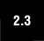

5.7. Other Numeric Types5.7.1. Boolean "Numbers" Boolean types were added to Python starting in version 2.3. Although Boolean values are spelled "True" and "False," they are actually an integer subclass and will behave like integer values one and zero, respectively, if used in a numeric context. Here are some of the major concepts surrounding Boolean types:
All Python objects have an inherent true or False value. To see what they are for the built-in types, review the Core Note sidebar in Section 4.3.2. Here are some examples using Boolean values: # intro
>>> bool(1)
True
>>> bool(True)
True
>>> bool(0)
False
>>> bool('1')
True
>>> bool('0')
True
>>> bool([])
False
>>> bool ( (1,) )
True
# using Booleans numerically
>>> foo = 42
>>> bar = foo < 100
>>> bar
True
>>> print bar + 100
101
>>> print '%s' % bar
True
>>> print '%d' % bar
1
# no __nonzero__()
>>> class C: pass
>>> c = C()
>>>
>>> bool(c)
True
>>> bool(C)
True
# __nonzero__() overridden to return False
>>> class C:
... def __nonzero__(self):
... return False
...
>>> c = C()
>>> bool(c)
False
>>> bool(C)
True
# OH NO!! (do not attempt)
>>> True, False = False, True
>>> bool(True)
False
>>> bool(False)
TrueYou can read more about Booleans in the Python documentation and PEP 285. 5.7.2. Decimal Floating Point NumbersDecimal floating point numbers became a feature of Python in version 2.4 (see PEP 327), mainly because statements like the following drive many (scientific and financial application) programmers insane (or at least enrage them): >>> 0.1 0.1000000000000001
Why is this? The reason is that most implementations of doubles in C are done as a 64-bit IEEE 754 number where 52 bits are allocated for the mantissa. So floating point values can only be specified to 52 bits of precision, and in situations where you have a(n endlessly) repeating fraction, expansions of such values in binary format are snipped after 52 bits, resulting in rounding errors like the above. The value .1 is represented by 0.11001100110011 ... * 2-3 because its closest binary approximation is .0001100110011 ..., or 1/16 + 1/32 + 1/256 + ... As you can see, the fractions will continue to repeat and lead to the rounding error when the repetition cannot "be continued." If we were to do the same thing using a decimal number, it looks much "better" to the human eye because they have exact and arbitrary precision. Note in the below that you cannot mix and match decimals and floating point numbers. You can create decimals from strings, integers, or other decimals. You must also import the decimal module to use the Decimal number class. >>> from decimal import Decimal >>> dec = Decimal(.1) Traceback (most recent call last): File "<stdin>", line 1, in ? File "/usr/local/lib/python2.4/decimal.py", line 523, in __new__ raise TypeError("Cannot convert float to Decimal. " + TypeError: Cannot convert float to Decimal. First convert the float to a string >>> dec = Decimal('.1') >>> dec Decimal("0.1") >>> print dec 0.1 >>> dec + 1.0 Traceback (most recent call last): File "<stdin>", line 1, in ? File "/usr/local/lib/python2.4/decimal.py", line 906, in __add__ other = _convert_other(other) File "/usr/local/lib/python2.4/decimal.py", line 2863, in _convert_other raise TypeError, "You can interact Decimal only with int, long or Decimal data types." TypeError: You can interact Decimal only with int, long or Decimal data types. >>> >>> dec + Decimal('1.0') Decimal("1.1") >>> print dec + Decimal('1.0') 1.1 You can read more about decimal numbers in the PEP as well as the Python documentation, but suffice it to say that they share pretty much the same numeric operators as the standard Python number types. Since it is a specialized numeric type, we will not include decimals in the remainder of this chapter. |